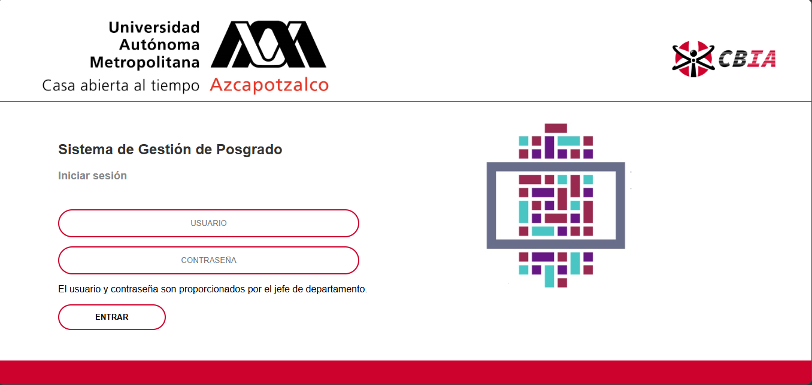
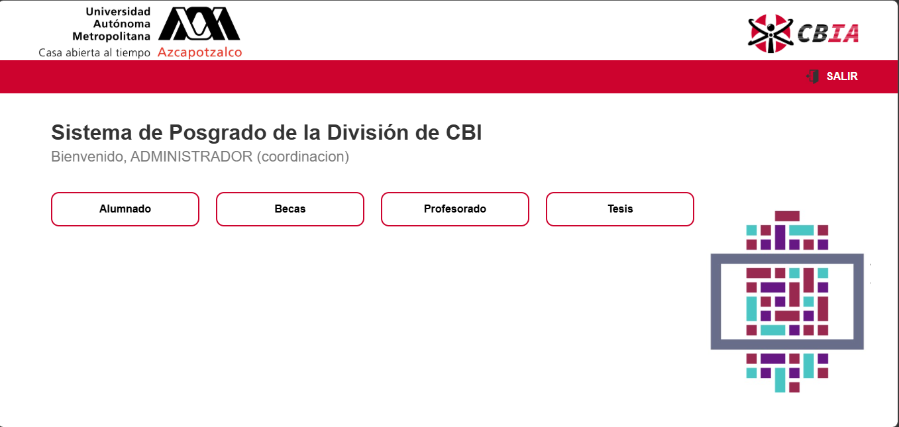
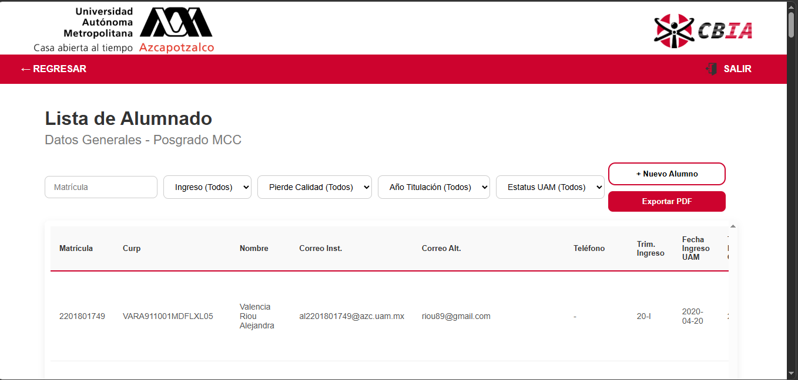
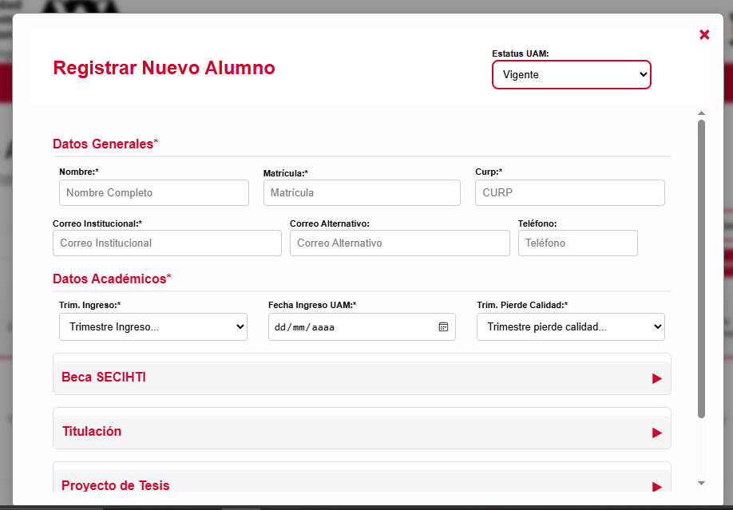
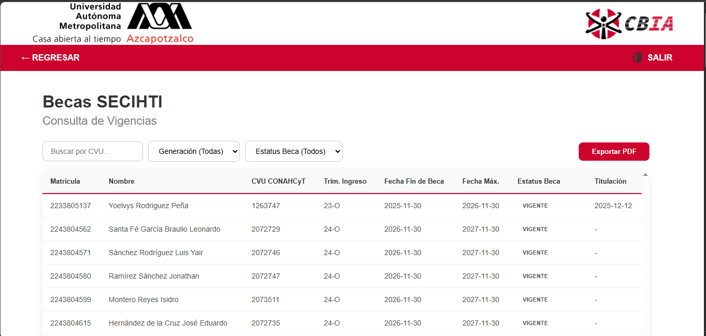
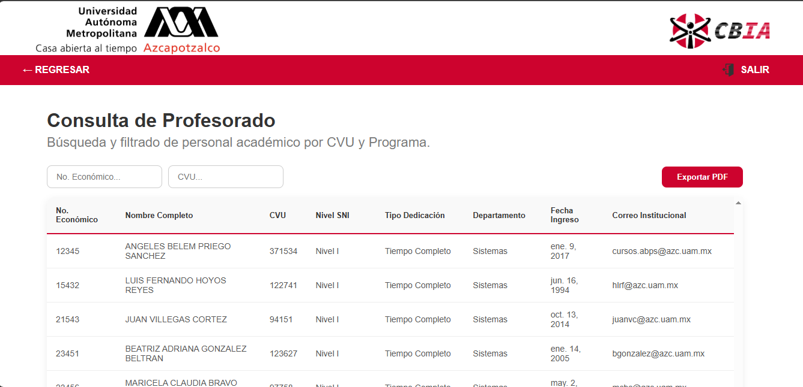
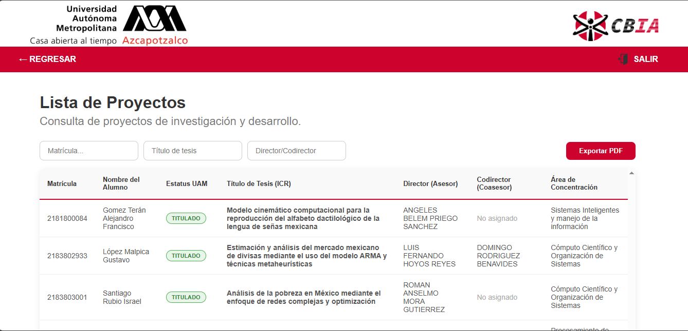
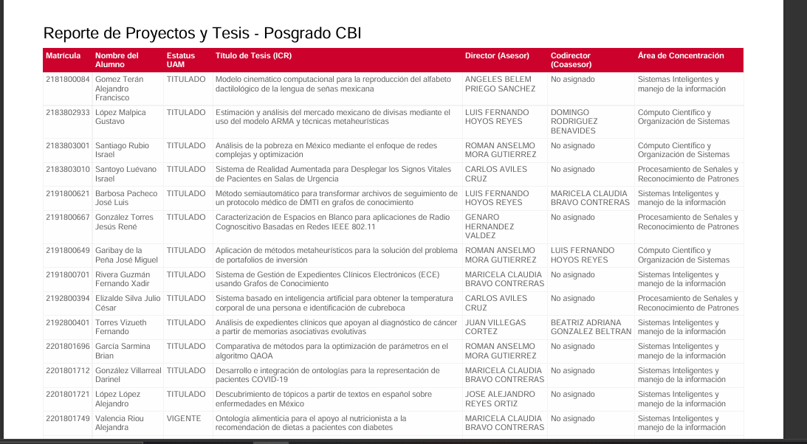

1. Inicio de Sesión
Acceso al Sistema
Paso 1: Abrir el sistema
Accede a la página principal del sistema desde tu navegador web.
Paso 2: Ingresar credenciales
En la pantalla de login, introduce:
- Usuario: Tu nombre de usuario asignado
- Contraseña: Tu contraseña personal
Paso 3: Ingresar al sistema
Presiona el botón "Entrar" o presiona la tecla Enter.

Figura 1: Pantalla de inicio de sesión del sistema
Nota: Si olvidaste tu contraseña, contacta al administrador del sistema.
Importante: Asegúrate de cerrar sesión al finalizar tu trabajo para proteger la información.
2. Menú Principal (Dashboard)
Acceso a los Módulos
Paso 1: Visualizar el menú principal
Después de iniciar sesión, verás la pantalla principal con los siguientes módulos disponibles:
- Alumnado - Gestión de estudiantes
- Becas - Consulta de becas SECIHTI
- Profesorado - Consulta de profesores
- Tesis - Proyectos de investigación
Paso 2: Seleccionar un módulo
Haz clic en el botón del módulo que deseas consultar.

Figura 2: Menú principal con acceso a todos los módulos
Cerrar Sesión
Para salir del sistema, presiona el botón "SALIR" ubicado en la parte superior derecha.
3. Módulo de Alumnos
Consulta y Registro de Alumnos
Paso 1: Acceder al módulo
Desde el menú principal, haz clic en "Alumnado".
Paso 2: Consultar alumnos
Utiliza los filtros de búsqueda:
- Matrícula: Busca por número de matrícula
- Trimestre de Ingreso: Filtra por periodo de ingreso
- Trimestre Pierde Calidad: Filtra por periodo límite
- Año de Titulación: Busca por año de titulación
- Estatus UAM: Filtra por estado académico (Vigente, Titulado, Baja,Baja Temporal.)
Paso 3: Registrar nuevo alumno
- Presiona el botón "+ Nuevo Alumno"
- Completa los datos generales (Nombre, Matrícula, CURP, etc.)
- Ingresa los datos académicos (Trimestre de ingreso, estatus, etc.)
- Agrega información de beca (opcional - desplegar acordeón)
- Ingresa datos de titulación (opcional - desplegar acordeón)
- Registra proyecto de tesis (opcional - desplegar acordeón)
- Presiona "Guardar Expediente Completo"
Paso 4: Editar alumno
- Localiza el alumno en la tabla
- Presiona el ícono de lápiz (✏️) en la columna "Acciones"
- Modifica los datos necesarios
- Presiona "Guardar Expediente Completo"
Paso 5: Eliminar alumno
- Localiza el alumno en la tabla
- Presiona el ícono de basura (🗑️) en la columna "Acciones"
- Confirma la eliminación presionando "Sí, Eliminar"

Figura 3: Pantalla de consulta y gestión de alumnos

Figura 4: Formulario de registro de alumno con secciones desplegables
Nota: El sistema calcula automáticamente el trimestre en que pierde calidad el alumno basándose en el trimestre de ingreso.
4. Módulo de Becas
Consulta de Becas SECIHTI/CONAHCYT
Paso 1: Acceder al módulo
Desde el menú principal, haz clic en "Becas".
Paso 2: Filtrar becas
Utiliza los filtros disponibles:
- CVU: Busca por Clave Única de Usuario CONAHCYT
- Generación: Filtra por trimestre de ingreso (últimos 10 años)
- Estatus Beca: Filtra por estado (Vigente, Suspendida, Baja, etc.)
Paso 3: Visualizar información
La tabla muestra:
- Matrícula del alumno
- Nombre completo
- CVU CONAHCYT
- Trimestre de ingreso
- Fecha de fin de beca
- Fecha máxima CONAHCYT
- Estatus de la beca
- Fecha de titulación

Figura 5: Pantalla de consulta de becas con filtros dinámicos
Importante: Los filtros se aplican automáticamente mientras escribes (búsqueda en tiempo real).
5. Módulo de Profesorado
Consulta del Núcleo Académico
Paso 1: Acceder al módulo
Desde el menú principal, haz clic en "Profesorado".
Paso 2: Buscar profesores
Utiliza los campos de búsqueda:
- Número Económico: Busca por identificador institucional
- CVU: Busca por Clave Única de Usuario
Paso 3: Visualizar información
La tabla muestra:
- Número económico
- Nombre completo
- CVU
- Nivel SNI (Sistema Nacional de Investigadores)
- Tipo de dedicación
- Departamento
- Fecha de ingreso al núcleo
- Correo institucional

Figura 6: Pantalla de consulta del núcleo académico
Nota: La búsqueda se actualiza automáticamente mientras escribes en los campos de filtro.
6. Módulo de Proyectos/Tesis
Consulta de Proyectos de Investigación
Paso 1: Acceder al módulo
Desde el menú principal, haz clic en "Tesis".
Paso 2: Filtrar proyectos
Utiliza los filtros disponibles:
- Matrícula: Busca por número de matrícula del alumno
- Título de tesis: Busca por palabras clave del título
- Director/Codirector: Busca por nombre del asesor
Paso 3: Visualizar información
La tabla muestra:
- Matrícula del alumno
- Nombre del alumno
- Estatus UAM (con indicador de color)
- Título de tesis
- Director (asesor)
- Codirector (coasesor)
- Área de concentración

Figura 7: Pantalla de consulta de proyectos de tesis
Nota: Los estatus se muestran con colores: Verde (Titulado), Amarillo (Vigente), Rojo (Baja), Naranja (Baja Temporal).
7. Generación de Reportes PDF
Exportar Información a PDF
Paso 1: Aplicar filtros (opcional)
Aplica los filtros deseados en el módulo que estés consultando para obtener solo la información que necesitas.
Paso 2: Generar reporte
Presiona el botón "Exportar PDF" ubicado en la parte superior derecha de la tabla.
Paso 3: Descargar archivo
El sistema generará automáticamente un archivo PDF con:
- Encabezado institucional con el nombre del reporte
- Tabla con todos los datos visibles
- Formato profesional con colores institucionales
Paso 4: Guardar o imprimir
El archivo se descargará automáticamente a tu carpeta de descargas predeterminada. Puedes:
- Abrirlo para visualizarlo
- Imprimirlo directamente
- Guardarlo en otra ubicación

Figura 8: Ejemplo de reporte PDF generado
Importante: Los reportes PDF incluyen únicamente los datos visibles en la tabla después de aplicar los filtros.